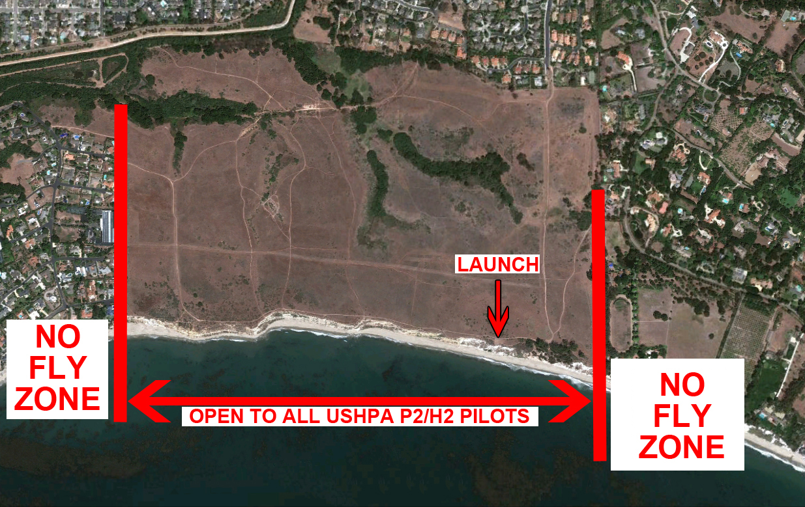

More Mesa
Rating: P2+
More Mesa
Rating: P2+
Airspace
Because More Mesa is within the Santa Barbara Airport airspace, pilots need to confirm that the SBA Control Tower has been notified of flying activities on the coast. Confirmation can be established by tuning into 132.650 or calling 805.967.0283 and listening for the ATIS that refers to gliders flying in the More Mesa bluffs area. If there is no mention of gliding activity, ask on the Flying Today section of the SBSA chat on Telegram for someone to open the Coast Window with the airport. A local pilot will call them to let them know and will confirm on the chat that the window has been open for gliders.
Privacy Guidelines
Please respect the privacy of local residents:
- Avoid loitering in front of any property while flying.
- No flying over any properties at any time. Stay over the ocean side of the cliff’s edge.
- No flying near property when there are people, excluding gardeners, present.
- No making verbal or visual contact with anyone on private properties at any time.
- No pictures or videos which include any portion of a person’s property. Best not to fly with or use any camera equipment here.
- No looking at any properties even if no person is present.
Restrictions
Students and novice pilots flights are restricted to the undeveloped More Mesa area and should fly under the supervision of a local instructor.
No flying near animals, including dogs and horses, if they are being agitated. Turn around and fly where this is not an issue.
For safety purposes, every pilot should attempt to maintain at all times a flying position not further inland than the beachside of the top of the cliff-face.
Please pay particular attention to the estates east of the launch area, specifically where the cabaña is on the beach. These property owners have experienced privacy incursions because their properties are on the most soarable area of the bluffs. If the conditions are such that the only soarable area of the bluffs is at this location, pilots wishing to have a soaring flight should not fly until conditions improve.
Flights originating from the Douglas Family Preserve, Wilcox, that go west past the gap at Arroyo Burro Beach, Hendry’s, are bound by all of the guidelines above.
Incident History
These guidelines were established due to incidents that threatened foot-launched flying in this area.
These incidents include:
- Pilots flying without the Santa Barbara Airport Tower being notified prior to flight.
- Mishaps involving pilots with limited experience that have resulted in injuries and/or the need to call on County rescue services.
Contacts
Eagle Paragliding: 805-968-0980
Fly Above All Paragliding: 805-965-3733
Fly Away Hang Gliding: 805-957-9145
John Greynald: 805-682-3483
Map
